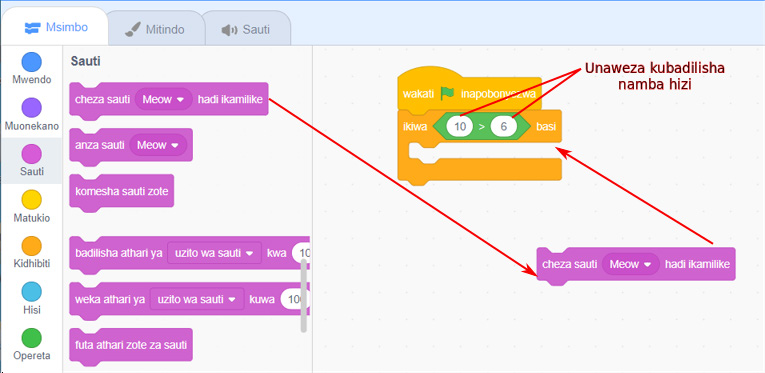
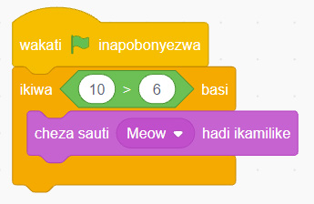

8.
Katika chumba cha kwanza cha bloku ya kubwa kuliko, andika namba 10.
9.
Katika chumba cha pili cha bloku ya kubwa kuliko, andika namba 6.
10.
Bofya au tumia mishale menyu ya bloku za ‘Sauti’.
11.
Buruta na dondosha bloku ya ‘cheza sauti hadi ikamilike’ ndani ya bloku ya ‘ikiwa basi’ kama inavyoonekana kwenye Kielelezo namba 40.

Kielelezo namba 40: Kuingiza bloku ya sauti ndani ya bloku ya ikiwa basi
12.
Utapata programu kama inavyooneshwa katika Kielelezo namba 41.

Kielelezo namba 41: Programu ya kompyuta inayocheza sauti ikiwa hali ni ya kweli
SAYANSI DARASA LA IV KITABU CHA MWANAFUNZI.indd 142
17/09/2025 13:14